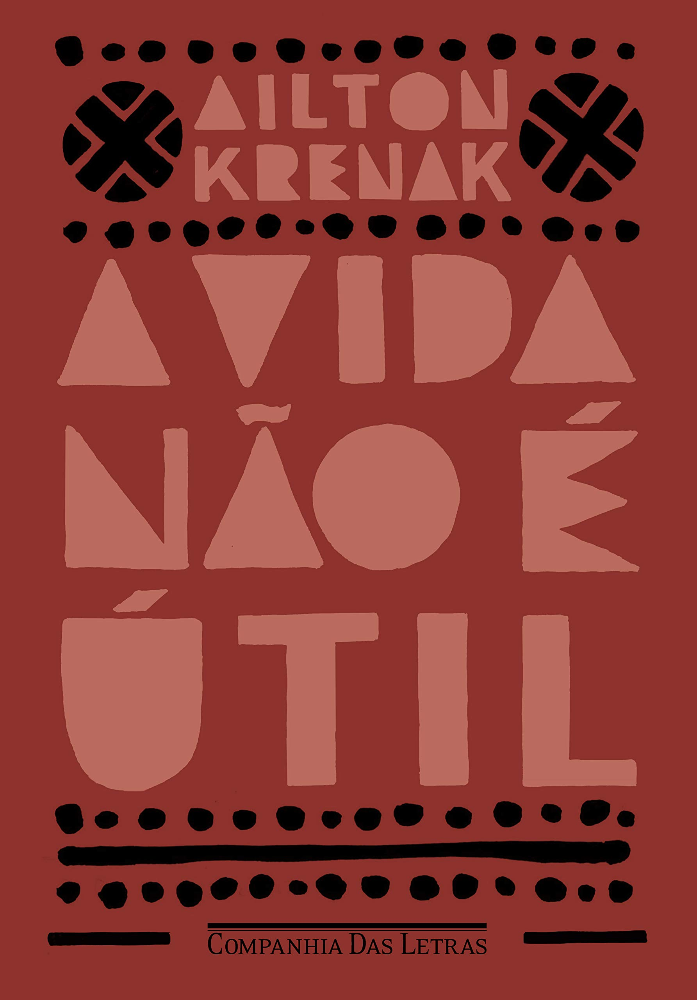

Livro do Mês: A vida não é útil

Na obra "A vida não é útil", o escritor Airlton Krenak critica o sistema capitalista e o consumismo, questionando a lógica utilitarista e antropocêntrica que prioriza o desenvolvimento em detrimento da sustentabilidade e do bem-estar. A obra reúne textos que convidam o leitor a repensar a relação entre a humanidade e a natureza, sendo uma forma de repassar história e visão de "antepassados".